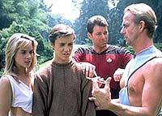
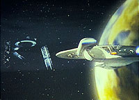
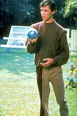
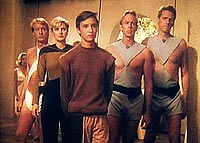
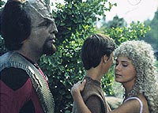

|
MANCHETE
DO EPISÓDIO
História
esbanja temática filosófica,
mas não consegue desenvolver o tema
Episódio
anterior | Próximo
episódio
Sinopse:
Data Estelar: 41255.6.
A Enterprise ajuda a estabelecer
uma colônia num planeta do sistema Strnad e depois ruma para
Rubicam III para uma licença. O povo de lá, Edo, é extremamente
carinhoso e sensual e dá as boas-vindas à tripulação.
 O
grupo avançado descobre que esse é um mundo idílico, onde todos
parecem ter tudo o que desejam, e onde o crime não existe.
Infelizmente, descobrem também a razão da ausência de crimes:
todos os delitos, desde os menos graves até os mais sérios, são
punidos de uma única forma --a pena de morte. Isso é descoberto
quando Wesley Crusher acidentalmente quebra algumas plantas e é
condenado à morte.
Picard deve decidir se irá permitir que se faça justiça segundo
as leis do planeta, ou se ignorará a Primeira Diretriz e resgatará
Wesley. Para complicar a situação, há uma nave em órbita do
planeta que alega ser o deus dos Edos e exige que a Enterprise vá
embora daquele setor do espaço, além de retirar a colônia que
acabara de estabelecer no planeta próximo.
 No
fim, Picard decide pelo resgate do filho de Beverly, com base no
princípio de que a lei, para ser justa, depende do bom senso na
hora de estabelecer exceções, argumento que acaba recebendo a
aprovação do deus dos Edos.
Comentários:
"Justice" se propõe a estabelecer uma
discussão filosófica. No cerne dela, o conflito inevitável entre
dois conceitos próximos, mas distintos: Lei e Justiça.
A verdadeira Justiça pode ser entendida com o que cabe a cada um
dos membros de uma sociedade, entre direitos e deveres. O principal
problema é que esse é um conceito totalmente abstrato, ou seja, só
se forma na mente das pessoas. O que é justo para um é totalmente
injusto para outro.
 Para
cobrir esse terreno entre a abstração da Justiça e a realidade da
sociedade, existem as leis. Elas são uma aproximação, um
"arredondamento", do conceito de Justiça, partindo de um
consenso. Trata-se de um conjunto de regras criado para permitir o
convívio social.
A lei estabelece regras gerais de conduta. Mas, como toda regra
geral, obrigatoriamente possui exceções. Se assim não o fosse, não
teria como se aproximar do conceito de Justiça em casos especiais e
não-previstos pelas regras pré-estabelecidas.
Esta justaposição delicada entre o justo e o legal é exatamente o
dilema enfrentado por Picard durante o episódio: deve ele primar
pela Justiça ou respeitar as leis dos Edos e a Primeira Diretriz?
Trata-se de um tema dos mais ricos e fascinantes. Infelizmente, foi
extremamente mal desenvolvido no episódio. O motivo: a história não
consegue falar por si mesma.
O episódio termina por mera decisão de Picard. Ele diz "vamos
embora", troca meia dúzia de palavras com o deus Edo e vai
embora para a Enterprise com Wesley. Ponto final.
Isso mostra que os roteiristas entraram em uma questão tão
complicada que a solução não se apresentou durante o episódio.
Foi necessário incluir um fator arbitrário --a decisão de Picard--
para que o enredo pudesse ser concluído.
 Olhando
estritamente para a história, poder-se-ia dizer que trata-se de um
enredo em torno de uma tempestade em copo d'água --tudo acontece
porque Wesley amassa umas plantinhas de um jardim dos Edos.
Mas vale lembrar que esse problema supostamente bobo é apenas uma
metáfora, construída para ser propositalmente absurda com o único
objetivo de mostrar a diferença --da forma mais contundente possível--
entre lei e justiça. Ou seja, o episódio ganha enquanto filosfia,
mas perde enquanto roteiro.
Em termos de produção, tirando alguns problemas com algumas
perucas loiras --que ficaram obviamente falsas e mal-colocadas em
certas cenas--, a escolha das locações e das vestimentas para os
Edos ajudou a estabelecer o ambiente do planeta.
Citações:
LaForge - "They make love
at the drop of a hat."
("Eles fazem amor ao menor cumprimento.")*
Yar - "Any hat."
("De qualquer um.")*
*como a tradução literal
era impossível, fez-se uma adaptação livre.
Data - "Would you choose one life over a thousand?"
("Você escolheria uma vida em lugar de mil?")
Picard - "I refuse to let arithmetic decide questions like
that."
("Recuso-me a deixar a aritmética decidir questões como
essa.")
Picard - "There can be no justice as long as laws are
absolute. Even life itself is an exercise in exceptions."
("Não pode haver justiça enquanto as leis forem absolutas. Até
mesmo a vida é um exercício em exceções.")
Riker - "When has justice been as simple as a
rulebook?"
("Desde de quando a justiça foi tão simples quanto um livro
de regras?")
Trivia:
  Esse foi o primeiro episódio desde o piloto a utilizar locações
externas para as filmagens. As cenas exteriores do planeta dos Edos
foram filmadas em Tilman Water Reclamation Plant, localizada ao
norte de Los Angeles, e a cena da queda de Wesley foi filmada no
terreno da Biblioteca Huntington, em Pasadena.
Esse foi o primeiro episódio desde o piloto a utilizar locações
externas para as filmagens. As cenas exteriores do planeta dos Edos
foram filmadas em Tilman Water Reclamation Plant, localizada ao
norte de Los Angeles, e a cena da queda de Wesley foi filmada no
terreno da Biblioteca Huntington, em Pasadena.
Ficha
técnica:
História de Ralph Wills e
Worley Thorne
Roteiro de Worley Thorne
Direção de James L. Conway
Exibido em 09/11/1987
Produção: 009
Elenco:
Patrick Stewart como
Jean-Luc Picard
Jonathan Frakes como William Thomas Riker
Brent Spiner como Data
LeVar Burton como Geordi La Forge
Michael Dorn como Worf
Gates McFadden como Beverly Crusher
Marina Sirtis como Deanna Troi
Wil Wheaton como Wesley Crusher
Denise Crosby como Natasha "Tasha" Yar
Elenco convidado:
Brenda Bakke como Rivan
Jay Louden como Liator
Josh Clark como Comando
David Q. Combs e Richard Lavin como Mediadores
Judith Jones como garota Edo
Brad Zerbst como enfermeiro
Eric Matthew e David Michael Graves como garotos Edos
Episódio
anterior | Próximo
episódio
|